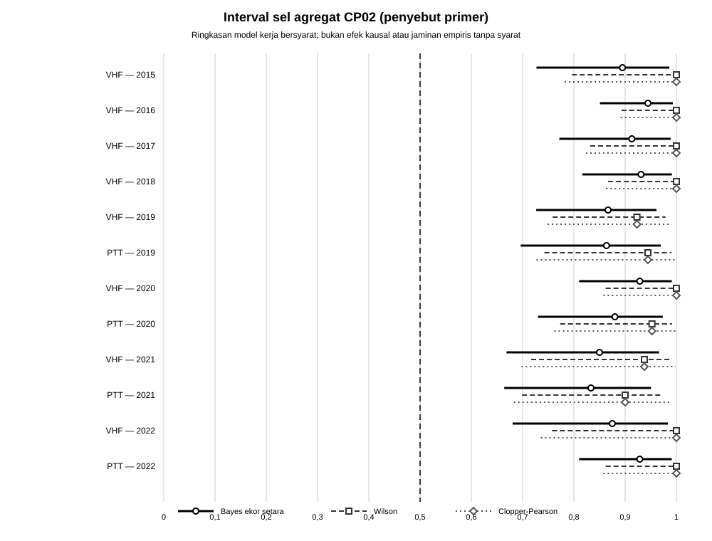
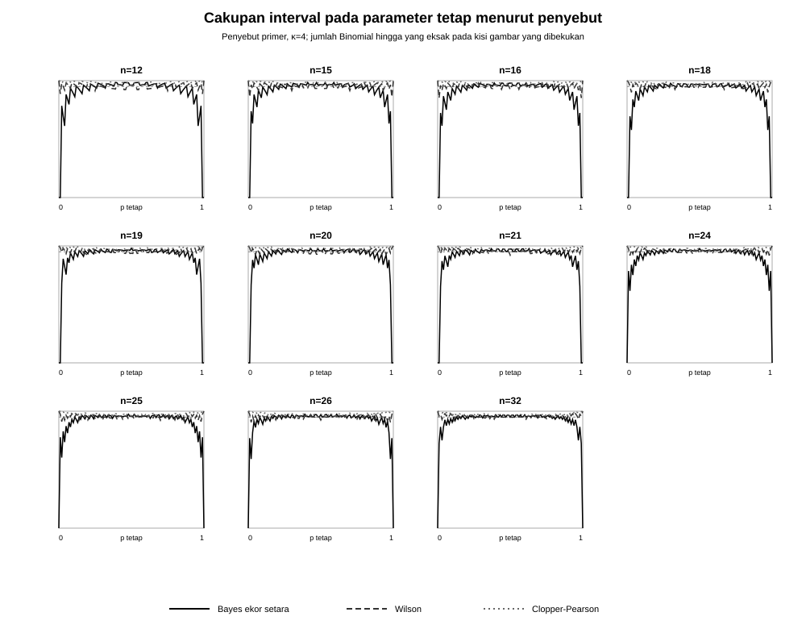
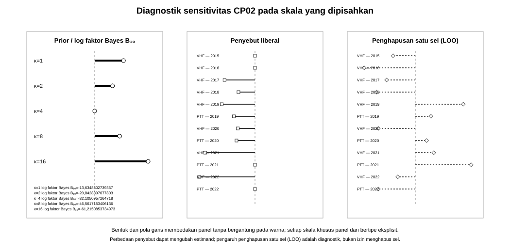

Satu pertanyaan, dua kerangka kalibrasi, dan satu jejak byte
Proyek akhir ini memakai data agregat tentang kecenderungan bersarang greater sage-grouse dari
rekaman Dryad Supporting data for assessing impacts of satellite GPS
transmitters on survival, nesting propensity, and nest success of greater
sage-grouse. Rekaman kanonisnya adalah
https://datadryad.org/dataset/doi:10.5061/dryad.573n5tbf3, dengan DOI
https://doi.org/10.5061/dryad.573n5tbf3. Analisis dibatasi pada versi dan
dua aset yang dibekukan di bawah; ia tidak mengambil versi terbaru secara
diam-diam dan tidak mengimpor data mikro tingkat individu lain dari deposit.
Pertanyaan utamanya adalah apakah peluang inisiasi sarang yang didefinisikan oleh penyebut konservatif cukup konsisten untuk diwakili oleh satu peluang bersama atau berbeda menurut sel tipe pemancar–tahun, serta bagaimana kesimpulan dan tindakan berubah ketika dinilai melalui target Bayesian dan frekuentis yang berbeda. Data agregat yang bersifat observasional tidak mengidentifikasi efek kausal tipe pemancar, tahun, alat, perilaku individual, kelangsungan hidup, atau mekanisme biologis.
Hak, provenans, dan identitas byte
Pembekuan mengikat versi 3, ID versi 268230, bertanggal
2023-12-08, diterbitkan Dryad. Pengambilan selesai pada
2026-08-30T20:22:32Z. Bukti mesin berada di
data/capstones/CP02/DATASET_PROVENANCE.json, inventaris masukan di
data/capstones/CP02/INPUT_MANIFEST.csv, skema di
data/capstones/CP02/SCHEMA.json, dan penalaran hak di
data/capstones/CP02/RIGHTS_EVIDENCE.md.
Kedua hash lokal identik dengan nilai hash penerbit; inventaris lengkap ditampilkan pada Tabel 1 di dalam solusi. Metadata Dryad dan DataCite mengikat rekaman ke CC0-1.0; byte boleh disalin, didistribusikan ulang, dan diolah menjadi turunan. Sitasi ilmiah tetap diwajibkan dalam proyek akhir ini. Status CC0 aset sumber dipertahankan terpisah dari CC BY-SA 4.0 untuk teks, soal, solusi, skrip, dan lapisan editorial orisinal pendamping. Lisensi pendamping tidak melisensikan ulang byte Dryad.
CSV mentah mempunyai tepat 12 baris data × 5 kolom:
Transmitter, Year, No_nests, Total_method_1, dan
Total_method_2. README menyebut “6 columns”, tetapi deskripsinya sendiri
hanya menomori posisi 1–5, kepala kolom mentah mempunyai lima nama, dan setiap baris
mempunyai lima medan. Angka enam dicatat sebagai salah ketik dokumentasi;
alur kerja tidak membuat kolom laten.
Populasi, unit analisis, penyebut, dan estimand
Setiap baris adalah satu sel tipe pemancar \(z\) dan tahun \(t\), bukan satu burung atau satu sarang. Definisikan
Total_method_1 adalah penyebut primer yang oleh dokumentasi sumber diberi
label metode konservatif; Total_method_2 diberi label metode liberal dan
hanya dipakai dalam analisis sensitivitas terpisah. Byte yang dibekukan tidak memuat
alasan biologis yang cukup untuk merekonstruksi mengapa kedua metode itu diberi
label demikian. Pemilihan metode 1 sebagai analisis primer ditetapkan sebelum hasil sebagai
bagian dari rancangan analitis CP02, bukan klaim tentang maksud biologis
penulis sumber dan bukan pilihan yang didasarkan pada besarnya efek, kecocokan
model, atau signifikansi.
Model kerja utama ialah
dengan estimand
Model kerja ini mensyaratkan unit percobaan Bernoulli yang saling lepas dan independensi bersyarat agar fungsi kemungkinan dapat dibentuk sebagai hasil kali. Data agregat tidak membuktikan bahwa setiap betina menyumbang paling banyak satu inisiasi atau bahwa betina yang sama tidak muncul berulang kali pada sel berbeda. Karena itu setiap hasil inferensial di bawah bersifat bersyarat pada asumsi model; “eksak” berarti eksak di bawah hukum kerja tersebut, bukan verifikasi empiris atas unit yang tidak tersedia.
Populasi target terbatas pada betina yang dicakup oleh protokol sumber dan memenuhi aturan penyebut dalam tipe pemancar serta tahun yang dipublikasikan. Ia bukan seluruh populasi greater sage-grouse, bukan tahun atau lokasi di luar deposit, dan bukan populasi intervensi hipotetis.
Untuk indeks sel \(g=1,\ldots,G\), estimand utama adalah
Kontras yang ditetapkan sebelumnya ialah
Kontras membandingkan tipe pemancar pada tahun tumpang tindih 2019–2022 dan tahun berurutan di dalam tipe yang sama bila kedua sel ada. Tidak ada sel PTT 2015–2018; kombinasi tersebut berada di luar dukungan tabel, bukan bernilai nol atau hilang. Sensitivitas penyebut menaksir
yang dapat merupakan estimand lain, bukan penduga kedua yang boleh dipilih berdasarkan hasil untuk \(p^{(1)}_{zt}\).
Kerugian dan keputusan yang dibekukan sebelum hasil
Untuk estimasi titik gunakan kerugian kuadratik aditif
Untuk keputusan operasional pedagogis, tetapkan \(p_\star=0{,}50\), dan tindakan \(a_g=1\) berarti menyatakan \(p_g>p_\star\). Ambang itu bukan ambang pengelolaan biologis. Positif palsu mempunyai biaya \(c_{10}=2\) dan negatif palsu mempunyai biaya \(c_{01}=1\):
Jika kedua kerugian sama persis, pilih \(a_g=0\); selain itu, aturan Bayes memilih \(a_g=1\) tepat ketika
Pembanding frekuentis menahan \(p_g\) tetap dan menguji
dengan uji binomial eksak satu sisi berukuran paling besar 0,05. Kasus \(p_g=0{,}50\) termasuk dalam hipotesis nol. Klaim serentak lintas sel memakai koreksi Holm pada keluarga seluruh sel primer dengan tingkat galat keluarga 0,05.
Untuk pembandingan model, odds prior \(M_1:M_0=1:1\) dan kerugian salah memilih model simetris. \(M_0\) menyatakan satu peluang bersama, sedangkan \(M_1\) menyatakan peluang bebas per sel. Tindakan memilih \(M_1\) bila \(P(M_1\mid\boldsymbol y)>1/2\), ekuivalen dengan \(B_{10}>1\); jika nilainya tepat sama, pilih \(M_0\). Faktor Bayes, odds prior, odds posterior, dan tindakan adalah empat objek berbeda.
Masalah 1 — proyek akhir data terbuka Bayesian–frekuentis (100 poin)
Selesaikan delapan paket kerja berikut sebagai satu analisis. Setiap hasil numerik harus berasal dari byte lokal yang telah diverifikasi; keluaran perangkat lunak tidak menggantikan derivasi peluang, definisi estimand, atau argumen keputusan.
A. Hak, provenans, dan identitas byte (15 poin)
Verifikasi hash sebelum penguraian. Buat kartu data yang memuat DOI dan URL, penerbit, versi, waktu pengambilan, aset, lisensi, MIME dan pengodean, byte, SHA-256, skema, serta pemetaan kolom dari manifes beku. Pisahkan CC0 data dari CC BY-SA pendamping dan jelaskan mengapa tidak ada data mikro tingkat individu.
B. Pertanyaan, populasi, estimand, dan kerugian (10 poin)
Nyatakan populasi target, unit agregat, penyebut primer, estimand \(\boldsymbol p\), kontras, \(L_Q\), \(L_D\), kedua kerugian posterior, aturan untuk nilai yang tepat sama, dan aturan keputusan model. Pertahankan penyebut yang telah ditetapkan sebelum hasil dilihat dan beri label estimand lain pada skenario liberal bila maknanya berbeda. Jelaskan batas nonkausal.
C. Pemasukan dan pembersihan deterministik (10 poin)
Baca hanya byte pada manifes dan pertahankan byte mentah tanpa perubahan. Bekukan pemisah, pengodean, tipe, nilai hilang, urutan, serta kunci sel. Hentikan proses bila identitas atau skema berubah, kunci berulang, nilai bukan bilangan bulat, \(n_g\le0\), \(y_g<0\), atau \(y_g>n_g\). Hasilkan tabel bersih, manifes baris dan kolom, buku besar transformasi, serta hash keluaran tanpa imputasi.
D. Derivasi dan analisis Bayesian utama (20 poin)
Gunakan prior utama wajar (p_g\stackrel{\mathrm{ind}}\sim
\operatorname{Beta}(2,2)). Turunkan hukum bersama, bukti marginal sel, posterior,
rataan, varians, interval kredibel 95%, distribusi prediktif untuk replikasi, kontras,
probabilitas posterior bagi keputusan, serta kedua kerugian. Bandingkan \(M_0\), model satu peluang,
dan \(M_1\), model peluang per sel, yang masing-masing memakai prior wajar, melalui log bukti marginal dan \(B_{10}\); gunakan
loggamma dan jangan memakai prior tak wajar untuk bukti marginal.
E. Ketidakpastian dan pembanding frekuentis (15 poin)
Untuk setiap sel, hitung \(\widehat p_g\), interval Wilson dan Clopper–Pearson 95%, uji binomial eksak satu sisi, hitungan kritis, ukuran uji, daya, nilai-p mentah, serta keputusan Holm. Lakukan uji homogenitas kondisional eksak \(2\times G\) dengan pengurutan devians. Untuk setiap penyebut berbeda, hitung cakupan parameter-tetap interval Bayesian, Wilson, dan Clopper–Pearson pada kisi yang ditetapkan sebelumnya, termasuk titik ujung dan tetangganya; pisahkan minimum kisi dari identitas rataan terhadap prior.
F. Diagnostik dan sensitivitas (15 poin)
Tetapkan sebelum hasil dilihat ukuran ketidakcocokan Pearson, sisaan maksimum, jumlah sel batas, dan kontras menurut kelompok dan waktu yang dapat dibenarkan. Laporkan distribusi replikasi, luas ekor posterior, benih acak, dan MCSE tanpa menyebutnya nilai-p klasik. Ulangi analisis untuk prior simetris wajar \(\operatorname{Beta}(\kappa/2,\kappa/2)\), \(\kappa\in\{1,2,4,8,16\}\), penyebut liberal, dan penghapusan satu sel. Audit kelangkaan, dispersi berlebih, keteridentifikasian, serta batas penghentian opsional.
G. Pemutaran ulang luring dan keluaran statis yang aksesibel (10 poin)
Sediakan satu generator dengan mode --write dan --check-only; utamakan penjumlahan eksak dan
gunakan benih acak PCG64 2026083002 hanya bila simulasi diperlukan. Setelah menjalankan
--write satu kali, jalankan --check-only dua kali; hasilnya harus cocok byte demi byte tanpa menulis,
mengakses jaringan, atau menjalankan proses peramban. Inventarisasikan CSV, SVG, teks alternatif,
manifes, dan tanda terima. Setiap tabel mempunyai keterangan dan kepala kolom dengan atribut scope, serta
setiap SVG mempunyai elemen <title> dan <desc>, beserta CSV dan teks pasangannya.
H. Kesimpulan terkalibrasi (5 poin)
Hubungkan kesimpulan dengan estimand, prior, kerugian, penyebut, dan target kalibrasi. Pisahkan posterior, prediktif, cakupan, ukuran uji dan daya, risiko, bukti marginal, serta uji homogenitas. Laporkan pembalikan sensitivitas dan akhiri dengan batas agregasi, generalisasi, privasi, kelangkaan, dan nonkausalitas.
Petunjuk 1
Bekukan dahulu tabel sel \((g,y_g,n_g)\), arti penyebut primer, dan estimand. Tulis fungsi kemungkinan binomial dan prior wajar sebelum menghitung posterior. Untuk bukti marginal, integralkan parameter; jangan mengganti integral dengan maksimum fungsi kemungkinan. Untuk prosedur frekuentis, tahan \(p\) tetap dan jumlahkan terhadap \(Y\mid p\). Dengan demikian posterior, prediktif, cakupan, ukuran uji, dan risiko tidak tercampur.
Petunjuk 2
Selesaikan analisis utama dengan satu penyebut dan prior yang ditetapkan sebelumnya. Baru kemudian ulangi prior wajar alternatif, penyebut liberal, dan penghapusan satu sel. Hitung faktor Bayes pada skala log. Setiap grafik harus mempunyai CSV dan ringkasan teks. Jika hasil berubah, nyatakan apakah yang berubah adalah prior, estimand, kerugian, atau data—bukan sekadar “metode”.
Jawaban ringkas untuk pemeriksaan mandiri
Byte beku menghasilkan 12 sel, 245 sukses, 252 percobaan primer, dan 277 percobaan sekunder. Analisis utama memakai prior \(\operatorname{Beta}(2,2)\) untuk parameter bersama di bawah M0 dan untuk setiap parameter peluang di bawah M1.
Perbandingan model memberi \(\log B_{10}=-32,105096\), \(B_{10}=1,140077\times 10^{-14}\), dan tindakan pilih M0 dengan odds prior 1:1 serta kerugian salah memilih simetris. Probabilitas posterior per sel \(P(p_g>0{,}50\mid y)\) berkisar 0,999512–1,000000. Uji homogenitas primer memberi nilai-p kondisional 2,607693 × 10-1; hasil itu bersyarat pada model sel binomial yang saling independen.
Minimum kisi cakupan adalah Bayes ekor setara (prior utama) 0,000000; Clopper–Pearson 0,950390; Wilson 0,835504. Ukuran uji binomial terbesar adalah 0,048126. Sebanyak 7 pasangan kontras menghasilkan 14 baris sensitivitas rasio odds dengan rataan tak hingga pada κ=1 dan κ=2; karena itu ringkasannya hanya memakai median dan kuantil. Seluruh angka di atas berasal dari manifes analisis; tidak ada klaim kausal atau generalisasi individual.
Solusi lengkap
Solusi dimulai dari identitas byte dan estimand yang dibekukan, lalu memakai hukum bersama yang sama untuk posterior, prediktif, dan keputusan. Pembanding frekuentis dibangun dari ruang sampel pada parameter tetap. Bagian-bagian di bawah membentuk satu alur; sensitivitas tidak menggantikan analisis utama dan keluaran deterministik tidak menggantikan derivasi.
Hak, pemasukan, dan tabel sel beku
| Aset lokal | ID berkas | MIME penerbit / saat diunduh | Pengodean | Byte | SHA-256 |
|---|---|---|---|---|---|
raw/nest_propensity.csv | 2765112 | text/csv / application/octet-stream | UTF-8, subhimpunan ASCII, tanpa BOM; CRLF | 285 | 8790b4dfa29a5b39228e758e40e02cbb48612c38b8440020aa108c85ca0673c4 |
raw/README.md | 2765118 | text/markdown / application/octet-stream | UTF-8, subhimpunan ASCII, tanpa BOM; LF | 4.139 (nilai mesin: 4139) | 43a53f9a451a4030b8d3edb2a7517c48863d8ef23d7ae4986d15c20d7f8f5459 |
No_nests adalah sukses, Total_method_1 percobaan primer konservatif, dan
Total_method_2 percobaan sensitivitas liberal. Label konservatif dan liberal
berasal dari dokumentasi sumber; alasan biologis di balik label itu tidak
terkandung dalam byte yang dibekukan. Byte mentah memenuhi
\(0\le y_g\le n_g^{(1)}\le n_g^{(2)}\) pada seluruh 12 sel; total dalam sumber
adalah 245 sukses, 252 percobaan primer, dan 277 percobaan sensitivitas. Dua
kelompok adalah VHF dan PTT; rentang keseluruhan 2015–2022, dengan tumpang tindih
2019–2022.
Algoritme pemasukan deterministik
- Verifikasi
INPUT_MANIFEST.csvserta kedua hash sebelum penguraian dan kunciTotal_method_1sebagai penyebut primer. - Verifikasi UTF-8 tanpa BOM, baris baru, kepala lima kolom, 12 rekaman data, lima medan per rekaman, dan ketidaksesuaian README “enam versus lima”.
- Urai token sebagai untai, lalu validasi nilai hilang, format bilangan bulat, domain, label VHF dan PTT, tahun, serta keunikan pasangan pemancar–tahun.
- Bentuk
cell_id,source_record, dancell_order; urutkan tahun menaik, lalu VHF sebelum PTT, tanpa memakai besarnya hasil. - Serialisasikan tabel bersih, manifes baris dan kolom, serta buku besar ke himpunan keluaran baru; byte mentah tidak pernah ditulis ulang. Verifikasi kembali hash mentah dan seluruh keluaran sebelum penulisan atomik.
| Kepala kolom mentah | Nama bersih | Peran | Domain |
|---|---|---|---|
Transmitter | transmitter | kelompok | VHF atau PTT |
Year | year | waktu | bilangan bulat, 2015–2022 sesuai inventaris |
No_nests | nests_initiated | sukses \(y_g\) | bilangan bulat nonnegatif |
Total_method_1 | hens_available_primary | percobaan primer \(n_g^{(1)}\) | bilangan bulat positif, sedikitnya \(y_g\) |
Total_method_2 | hens_available_secondary | percobaan sensitivitas \(n_g^{(2)}\) | bilangan bulat, sedikitnya \(n_g^{(1)}\) |
Keluaran bersih berurutan
cell_id,source_record,cell_order,transmitter,year,nests_initiated,
hens_available_primary,hens_available_secondary. Tidak ada imputasi,
agregasi ulang, penghapusan, hitungan semu, atau koreksi kekontinuan.
Untuk pengikatan tabel dan gambar, generator membentuk tampilan deterministik tanpa
mengubah skema dasar: group_label=transmitter, time_label adalah tahun
empat digit, cell_label="{group_label} — {time_label}",
successes=nests_initiated, trials_primary=hens_available_primary, dan
trials_secondary=hens_available_secondary. failures_primary serta
failures_secondary adalah percobaan dikurangi sukses; observed_rate dan
observed_rate_secondary adalah proporsi pada penyebut masing-masing.
denominator_id wajib bernilai primary_conservative_method_1 atau
secondary_liberal_method_2. Medan tampilan bukan kolom mentah keenam dan tidak
ditulis kembali ke CSV sumber.
| Sel | Pemancar | Tahun | Sukses | Percobaan primer | Percobaan liberal |
|---|---|---|---|---|---|
CP02-VHF-2015 | VHF | 2015 | 15 | 15 | 15 |
CP02-VHF-2016 | VHF | 2016 | 32 | 32 | 32 |
CP02-VHF-2017 | VHF | 2017 | 19 | 19 | 22 |
CP02-VHF-2018 | VHF | 2018 | 25 | 25 | 27 |
CP02-VHF-2019 | VHF | 2019 | 24 | 26 | 31 |
CP02-PTT-2019 | PTT | 2019 | 17 | 18 | 20 |
CP02-VHF-2020 | VHF | 2020 | 24 | 24 | 26 |
CP02-PTT-2020 | PTT | 2020 | 20 | 21 | 23 |
CP02-VHF-2021 | VHF | 2021 | 15 | 16 | 21 |
CP02-PTT-2021 | PTT | 2021 | 18 | 20 | 20 |
CP02-VHF-2022 | VHF | 2022 | 12 | 12 | 16 |
CP02-PTT-2022 | PTT | 2022 | 24 | 24 | 24 |
Kedua belas baris adalah hitungan agregat publik; tidak ada ID burung, ID sarang, lokasi, tanggal individual, atau riwayat perjumpaan. Agregasi mengurangi risiko pengungkapan, tetapi tidak membuktikan independensi percobaan atau penyebut noninformatif. Keduanya tetap asumsi model.
Model Bayesian, prediktif, dan keputusan
Untuk satu sel dan prior wajar umum
hukum bersamanya adalah
Integrasi terhadap \(p_g\) memberi bukti marginal sel
yang positif dan hingga, serta posterior
Pada analisis utama, prior bersama bagi \(M_0\) dan prior pada setiap sel bagi \(M_1\) memakai keluarga simetris yang sama, \(\operatorname{Beta}(\kappa/2,\kappa/2)\), dengan \(\kappa=4\); jadi \(a=b=2\). Independensi prior antarsel di bawah \(M_1\), fungsi kemungkinan berbentuk hasil kali, dan independensi bersyarat antarunit pengamatan adalah asumsi model, bukan fakta yang dapat dibuktikan dari hitungan agregat. Rataan dan varians posterior adalah
Di bawah \(L_Q\), tindakan Bayes per sel adalah rataan posterior. Selang kredibel ekor setara 95% memakai kuantil Beta posterior dan menyatakan massa posterior bersyarat; hal itu tidak dengan sendirinya menyatakan cakupan pada \(p_g\) tetap Himpunan kredibel dan prosedur kepercayaan.
Untuk kontras rasio odds
\(\Omega_{gh}=\{p_g/(1-p_g)\}/\{p_h/(1-p_h)\}\), ringkasan kanonis selalu
menggunakan median dan kuantil ekor setara 95%. Jika posterior sel ialah
\(\operatorname{Beta}(\alpha_g,\beta_g)\), rataan \(\Omega_{gh}\) hanya
hingga bila \(\beta_g>1\) dan \(\alpha_h>1\). Tujuh sel primer mempunyai
\(y_g=n_g\); pada sensitivitas \(\kappa=1\) dan \(\kappa=2\), syarat pertama
gagal ketika sel tersebut menjadi pembilang. Keluaran mempertahankan
moment_status=infinite_moment dan tidak mengganti rataan tak hingga dengan
rataan Monte Carlo semu.
Untuk replikasi agregat berukuran sama, \(K_g\mid p_g\sim\operatorname{Binomial}(n_g,p_g)\), integrasi posterior menghasilkan
Massa Beta–binomial ini harus berjumlah satu. Varians prediktif memuat variasi pengambilan sampel baru dan ketidakpastian posterior; prediksi yang hanya menyubstitusikan taksiran titik menghilangkan komponen kedua Prediktif prior dan prediktif posterior.
Untuk tindakan biner, tulis
Kerugian posterior tindakan 1 dan 0 adalah
Karena itu \(a_g=1\) tepat bila \(q_g>2/3\), sebagaimana diperoleh dengan meminimumkan kerugian posterior pada Minimalisasi posterior menghasilkan aturan Bayes.
Bukti marginal model bersama dan model per sel
Definisikan \(Y_+=\sum_g y_g\) dan \(N_+=\sum_g n_g\). Di bawah
bukti marginal adalah
Di bawah
bukti marginal adalah
Faktor binomial yang sama saling meniadakan, sehingga
Hitung pada skala log dengan loggamma. Prior tak wajar dilarang karena
konstanta arbitrernya membuat bukti marginal antarmodel tidak terdefinisi
Konstanta prior tidak proper tidak aman untuk pembandingan model. Dengan odds prior 1:1, odds posterior sama
dengan \(B_{10}\); tindakan model simetris memilih \(M_1\) bila \(B_{10}>1\).
| Sel | y/n¹ | Posterior | Rataan | Selang kredibel 95% | P(p>0,50|y) | Tindakan | Kerugian a=0 | Kerugian a=1 | E(K replikasi|y) |
|---|---|---|---|---|---|---|---|---|---|
| VHF — 2015 | 15/15 | Beta(17; 2) | 0,894737 | [0,727056; 0,986249] | 0,999928 | a=1 | 0,999928 | 0,000145 | 13,421053 |
| VHF — 2016 | 32/32 | Beta(34; 2) | 0,944444 | [0,850828; 0,993003] | 1,000000 | a=1 | 1,000000 | 0,000000 | 30,222222 |
| VHF — 2017 | 19/19 | Beta(21; 2) | 0,913043 | [0,771556; 0,988794] | 0,999995 | a=1 | 0,999995 | 0,000011 | 17,347826 |
| VHF — 2018 | 25/25 | Beta(27; 2) | 0,931034 | [0,816522; 0,991230] | 1,000000 | a=1 | 1,000000 | 0,000000 | 23,275862 |
| VHF — 2019 | 24/26 | Beta(26; 4) | 0,866667 | [0,726485; 0,961105] | 0,999992 | a=1 | 0,999992 | 0,000015 | 22,533333 |
| PTT — 2019 | 17/18 | Beta(19; 3) | 0,863636 | [0,696226; 0,969511] | 0,999889 | a=1 | 0,999889 | 0,000221 | 15,545455 |
| VHF — 2020 | 24/24 | Beta(26; 2) | 0,928571 | [0,810294; 0,990900] | 1,000000 | a=1 | 1,000000 | 0,000000 | 22,285714 |
| PTT — 2020 | 20/21 | Beta(22; 3) | 0,880000 | [0,730027; 0,973441] | 0,999982 | a=1 | 0,999982 | 0,000036 | 18,480000 |
| VHF — 2021 | 15/16 | Beta(17; 3) | 0,850000 | [0,668623; 0,966174] | 0,999636 | a=1 | 0,999636 | 0,000729 | 13,600000 |
| PTT — 2021 | 18/20 | Beta(20; 4) | 0,833333 | [0,664111; 0,950492] | 0,999756 | a=1 | 0,999756 | 0,000488 | 16,666667 |
| VHF — 2022 | 12/12 | Beta(14; 2) | 0,875000 | [0,680515; 0,983424] | 0,999512 | a=1 | 0,999512 | 0,000977 | 10,500000 |
| PTT — 2022 | 24/24 | Beta(26; 2) | 0,928571 | [0,810294; 0,990900] | 1,000000 | a=1 | 1,000000 | 0,000000 | 22,285714 |
| Objek | Log bukti marginal | log B₁₀ | B₁₀ | Odds prior | Odds posterior | Tindakan |
|---|---|---|---|---|---|---|
| M0 | -17,593906 | — | — | — | — | — |
| M1 | -49,699001 | — | — | — | — | — |
| M1 terhadap M0 | (-49,699001) − (-17,593906) | -32,105096 | 1,140077 × 10-14 | 1,000000 | 1,140077 × 10-14 | pilih M0 |
| Pasangan | Estimand | Rataan | Median | Selang 95% | P(estimand>0|y) | Status momen |
|---|---|---|---|---|---|---|
| PTT — 2019 dibandingkan dengan VHF — 2019 | selisih peluang | -0,003030 | -0,000010 | [-0,198596; 0,176032] | 0,499920 | hingga |
| PTT — 2019 dibandingkan dengan VHF — 2019 | rasio odds | tidak dilaporkan | 0,999884 | [0,185539; 5,929982] | 0,499920 | hingga; rataan tidak dilaporkan |
| PTT — 2020 dibandingkan dengan VHF — 2020 | selisih peluang | -0,048571 | -0,045319 | [-0,217871; 0,103490] | 0,259830 | hingga |
| PTT — 2020 dibandingkan dengan VHF — 2020 | rasio odds | tidak dilaporkan | 0,526647 | [0,056992; 3,784368] | 0,259830 | hingga; rataan tidak dilaporkan |
| PTT — 2021 dibandingkan dengan VHF — 2021 | selisih peluang | -0,016667 | -0,017893 | [-0,227915; 0,202369] | 0,431150 | hingga |
| PTT — 2021 dibandingkan dengan VHF — 2021 | rasio odds | tidak dilaporkan | 0,859123 | [0,140399; 4,713318] | 0,431150 | hingga; rataan tidak dilaporkan |
| PTT — 2022 dibandingkan dengan VHF — 2022 | selisih peluang | 0,053571 | 0,044457 | [-0,112117; 0,262342] | 0,714820 | hingga |
| PTT — 2022 dibandingkan dengan VHF — 2022 | rasio odds | tidak dilaporkan | 1,895010 | [0,180256; 20,180186] | 0,714820 | hingga; rataan tidak dilaporkan |
| VHF — 2016 dibandingkan dengan VHF — 2015 | selisih peluang | 0,049708 | 0,041023 | [-0,084970; 0,226365] | 0,739080 | hingga |
| VHF — 2016 dibandingkan dengan VHF — 2015 | rasio odds | tidak dilaporkan | 2,043381 | [0,202925; 20,678490] | 0,739080 | hingga; rataan tidak dilaporkan |
| VHF — 2017 dibandingkan dengan VHF — 2016 | selisih peluang | -0,031401 | -0,025231 | [-0,184243; 0,092641] | 0,331550 | hingga |
| VHF — 2017 dibandingkan dengan VHF — 2016 | rasio odds | tidak dilaporkan | 0,610841 | [0,059410; 6,207900] | 0,331550 | hingga; rataan tidak dilaporkan |
| VHF — 2018 dibandingkan dengan VHF — 2017 | selisih peluang | 0,017991 | 0,014772 | [-0,123897; 0,175908] | 0,593880 | hingga |
| VHF — 2018 dibandingkan dengan VHF — 2017 | rasio odds | tidak dilaporkan | 1,300769 | [0,127149; 13,567549] | 0,593880 | hingga; rataan tidak dilaporkan |
| VHF — 2019 dibandingkan dengan VHF — 2018 | selisih peluang | -0,064368 | -0,061707 | [-0,221926; 0,084966] | 0,186300 | hingga |
| VHF — 2019 dibandingkan dengan VHF — 2018 | rasio odds | tidak dilaporkan | 0,439742 | [0,050167; 2,651011] | 0,186300 | hingga; rataan tidak dilaporkan |
| VHF — 2020 dibandingkan dengan VHF — 2019 | selisih peluang | 0,061905 | 0,060183 | [-0,090405; 0,221541] | 0,801790 | hingga |
| VHF — 2020 dibandingkan dengan VHF — 2019 | rasio odds | tidak dilaporkan | 2,210233 | [0,360144; 19,297755] | 0,801790 | hingga; rataan tidak dilaporkan |
| VHF — 2021 dibandingkan dengan VHF — 2020 | selisih peluang | -0,078571 | -0,072653 | [-0,274827; 0,088675] | 0,184390 | hingga |
| VHF — 2021 dibandingkan dengan VHF — 2020 | rasio odds | tidak dilaporkan | 0,403495 | [0,042692; 2,948566] | 0,184390 | hingga; rataan tidak dilaporkan |
| VHF — 2022 dibandingkan dengan VHF — 2021 | selisih peluang | 0,025000 | 0,026979 | [-0,204633; 0,244837] | 0,604370 | hingga |
| VHF — 2022 dibandingkan dengan VHF — 2021 | rasio odds | tidak dilaporkan | 1,311866 | [0,175750; 12,678853] | 0,604370 | hingga; rataan tidak dilaporkan |
| PTT — 2020 dibandingkan dengan PTT — 2019 | selisih peluang | 0,016364 | 0,014663 | [-0,171511; 0,212573] | 0,565470 | hingga |
| PTT — 2020 dibandingkan dengan PTT — 2019 | rasio odds | tidak dilaporkan | 1,162882 | [0,180913; 7,516016] | 0,565470 | hingga; rataan tidak dilaporkan |
| PTT — 2021 dibandingkan dengan PTT — 2020 | selisih peluang | -0,046667 | -0,044812 | [-0,244761; 0,145984] | 0,312890 | hingga |
| PTT — 2021 dibandingkan dengan PTT — 2020 | rasio odds | tidak dilaporkan | 0,661746 | [0,110302; 3,589314] | 0,312890 | hingga; rataan tidak dilaporkan |
| PTT — 2022 dibandingkan dengan PTT — 2021 | selisih peluang | 0,095238 | 0,090917 | [-0,070201; 0,281786] | 0,871570 | hingga |
| PTT — 2022 dibandingkan dengan PTT — 2021 | rasio odds | tidak dilaporkan | 2,859047 | [0,469447; 25,464910] | 0,871570 | hingga; rataan tidak dilaporkan |
Pembanding frekuentis dan kalibrasi parameter-tetap
Analisis frekuentis menahan \(p_g\) tetap dan memperlakukan sampel hipotetis sebagai peubah acak:
Semua kata “eksak” pada bagian ini berarti eksak di bawah hukum binomial kerja, dengan penyebut diperlakukan tetap atau noninformatif serta independensi bersyarat unit dan sel sebagaimana diperlukan. Hitungan agregat tidak memverifikasi asumsi itu. Karena itu hasil membawa status bersyarat pada model dan tidak boleh dibaca sebagai pembuktian empiris atas independensi pengamatan.
Penduga proporsi mempunyai
Dengan \(\alpha=0{,}05\), interval Clopper–Pearson adalah
Karena kediskretan,
Interval skor Wilson, dengan \(z=z_{1-\alpha/2}\), mempunyai pusat dan setengah lebar
Jadi \(C_W=[m_W-h_W,m_W+h_W]\). Wilson tetap berada di \([0,1]\), tetapi cakupannya tidak eksak pada sampel hingga. Interval Wald tidak dipakai, terutama karena banyak sel berada pada \(y=0\) atau \(y=n\).
Untuk aturan \(C_J(y)=[L_J(y),U_J(y)]\), \(J\in\{\mathrm{CP},W,B\}\), cakupan parameter-tetap adalah
Konvensi batas tertutup sama bagi semua prosedur. Untuk setiap \(n\) yang muncul, mulai dari kisi
lalu tambahkan semua titik ujung dari seluruh hasil \(y=0,\ldots,n\) dan tetangga titik-mengambang terdekat di sebelah kiri dan kanannya. Laporkan minimum, maksimum, argmin, dan argmax pada kisi; jangan menyebutnya ekstrem global kontinu. Untuk interval kredibel utama, periksa terpisah identitas
yang merupakan kalibrasi rataan terhadap prior, bukan cakupan seragam Identitas kalibrasi rataan terhadap prior.
Uji ambang memakai nilai-p eksak
Definisikan hitungan kritis
jika himpunannya kosong, ambil \(k_n=n+1\). Fungsi daya adalah
Rasio kemungkinan monoton keluarga Binomial memberi
Kediskretan biasanya membuat ukuran uji lebih kecil dari 0,05. Nilai-p mentah tetap dilaporkan, sedangkan klaim serentak memakai Holm pada seluruh 12 sel primer. Nilai-p bukan peluang \(H_0\), dan kegagalan menolak bukan bukti bahwa \(p_g\le1/2\).
Uji homogenitas kondisional eksak di bawah model
Tuliskan
Di bawah \(H_0:p_1=\cdots=p_G=p\), dengan model sel binomial yang saling independen secara bersyarat dan setelah dikondisikan pada \(Y_+=s\),
untuk \(0\le x_g\le n_g\) dan \(\sum_gx_g=s\). Pengurutan yang ditetapkan sebelumnya memakai devians
dengan \(0\log 0=0\). Nilai-p eksak menjumlahkan probabilitas semua tabel yang memenuhi \(D(\boldsymbol x)\ge D(\boldsymbol y)\), termasuk tabel dengan devians yang sama dengan observasi. Enumerasi atau pemrograman dinamis harus memeriksa bahwa massa ruang kondisional menjumlah satu. Aproksimasi khi-kuadrat hanya boleh dilaporkan sebagai diagnostik berlabel bila semua hitungan harapan sedikitnya 5.
Uji ini bukan padanan numerik faktor Bayes: yang pertama memakai luas ekor pada ruang sampel kondisional, sedangkan yang kedua membandingkan prediksi marginal di bawah prior wajar Keputusan Bayes dan Neyman–Pearson memakai kendala yang berbeda.
Risiko frekuentis bagi penduga proporsi dan aturan rataan posterior adalah
Risiko dapat bersilang; satu kumpulan data tidak membuktikan dominasi universal. Untuk tindakan uji \(\varphi_g\), risiko biner adalah
Uji membatasi ukuran; aturan Bayes meminimumkan kerugian posterior. Keduanya hanya berimpit jika daerah penolakan yang dihasilkan kebetulan sama.
| Sel | y/n¹ | Proporsi | Wilson 95% | Clopper–Pearson 95% | Hitungan kritis | Ukuran aktual | p eksak | p Holm | Tolak serentak |
|---|---|---|---|---|---|---|---|---|---|
| VHF — 2015 | 15/15 | 1,000000 | [0,796117; 1,000000] | [0,781981; 1,000000] | 12 | 0,017578 | 3,051758 × 10-5 | 1,525879 × 10-4 | ya |
| VHF — 2016 | 32/32 | 1,000000 | [0,892821; 1,000000] | [0,891119; 1,000000] | 22 | 0,025051 | 2,328306 × 10-10 | 2,793968 × 10-9 | ya |
| VHF — 2017 | 19/19 | 1,000000 | [0,831821; 1,000000] | [0,823533; 1,000000] | 14 | 0,031784 | 1,907349 × 10-6 | 1,525879 × 10-5 | ya |
| VHF — 2018 | 25/25 | 1,000000 | [0,866808; 1,000000] | [0,862815; 1,000000] | 18 | 0,021643 | 2,980232 × 10-8 | 3,278255 × 10-7 | ya |
| VHF — 2019 | 24/26 | 0,923077 | [0,758584; 0,978645] | [0,748697; 0,990545] | 18 | 0,037759 | 5,245209 × 10-6 | 3,671646 × 10-5 | ya |
| PTT — 2019 | 17/18 | 0,944444 | [0,742427; 0,990125] | [0,727056; 0,998594] | 13 | 0,048126 | 7,247925 × 10-5 | 2,899170 × 10-4 | ya |
| VHF — 2020 | 24/24 | 1,000000 | [0,862024; 1,000000] | [0,857526; 1,000000] | 17 | 0,031957 | 5,960464 × 10-8 | 5,960464 × 10-7 | ya |
| PTT — 2020 | 20/21 | 0,952381 | [0,773306; 0,991544] | [0,761840; 0,998795] | 15 | 0,039177 | 1,049042 × 10-5 | 6,294250 × 10-5 | ya |
| VHF — 2021 | 15/16 | 0,937500 | [0,716713; 0,988881] | [0,697679; 0,998419] | 12 | 0,038406 | 2,593994 × 10-4 | 6,036758 × 10-4 | ya |
| PTT — 2021 | 18/20 | 0,900000 | [0,698966; 0,972134] | [0,683017; 0,987651] | 15 | 0,020695 | 2,012253 × 10-4 | 6,036758 × 10-4 | ya |
| VHF — 2022 | 12/12 | 1,000000 | [0,757506; 1,000000] | [0,735352; 1,000000] | 10 | 0,019287 | 2,441406 × 10-4 | 6,036758 × 10-4 | ya |
| PTT — 2022 | 24/24 | 1,000000 | [0,862024; 1,000000] | [0,857526; 1,000000] | 17 | 0,031957 | 5,960464 × 10-8 | 5,960464 × 10-7 | ya |

Uraian tekstual lengkap
Interval CP02 — padanan teks yang aksesibel Dua belas sel agregat pemancar–tahun memakai penyebut Total_method_1 yang konservatif. Rataan posterior di bawah Beta(2,2) berkisar dari 0,833333333333333 sampai 0,944444444444444. Interval Clopper–Pearson terlebar terdapat pada PTT — 2021. SVG memakai lingkaran bergaris utuh untuk ringkasan Bayes, persegi bergaris putus-putus untuk Wilson, dan belah ketupat bergaris titik untuk Clopper–Pearson, dengan peluang pada sumbu mendatar. Semua ringkasan inferensial bersifat ilustratif dan bersyarat karena bukti agregat tidak membuktikan unit Bernoulli yang saling lepas dan independen ataupun satu inisiasi yang memenuhi syarat per betina. Gambar tidak menyatakan efek kausal pemancar atau tahun.
Data kanonis CP02_cells_clean.csv · Data kanonis CP02_posterior_summary.csv · Data kanonis CP02_frequentist_comparison.csv Manifes dan aset pasangan
| Skenario | Devians | p kondisional | Massa ruang | Informatif | Status |
|---|---|---|---|---|---|
| primer | 13,621714 | 2,607693 × 10-1 | 1,000000 | ya | lulus, bersyarat pada model |
| sekunder liberal | 28,432526 | 5,509759 × 10-3 | 1,000000 | ya | lulus, bersyarat pada model |
| Skenario | Prosedur | n | Titik kisi | Min | Argmin | Maks | Argmaks | Cakupan p=0,50 | Rataan terhadap prior |
|---|---|---|---|---|---|---|---|---|---|
| primer | Bayes ekor setara (prior utama) | 12 | 1225 | 0,000000 | 0,000000 | 0,985757 | 0,383804 | 0,961426 | 0,950000 |
| primer | Clopper–Pearson | 12 | 1225 | 0,954486 | 0,723330 | 1,000000 | 0,000000 | 0,961426 | — |
| primer | Wilson | 12 | 1225 | 0,835504 | 0,014865 | 1,000000 | 0,000000 | 0,961426 | — |
| primer | Bayes ekor setara (prior utama) | 15 | 1279 | 0,000000 | 0,000000 | 0,984253 | 0,409925 | 0,964844 | 0,950000 |
| primer | Clopper–Pearson | 15 | 1279 | 0,951484 | 0,322870 | 1,000000 | 0,000000 | 0,964844 | — |
| primer | Wilson | 15 | 1279 | 0,836049 | 0,011867 | 1,000000 | 0,000000 | 0,964844 | — |
| primer | Bayes ekor setara (prior utama) | 16 | 1297 | 0,000000 | 0,000000 | 0,981707 | 0,383578 | 0,978729 | 0,950000 |
| primer | Clopper–Pearson | 16 | 1297 | 0,957814 | 0,523771 | 1,000000 | 0,000000 | 0,978729 | — |
| primer | Wilson | 16 | 1297 | 0,836184 | 0,011119 | 1,000000 | 0,000000 | 0,923187 | — |
| primer | Bayes ekor setara (prior utama) | 18 | 1333 | 0,000000 | 0,000000 | 0,978376 | 0,297807 | 0,969116 | 0,950000 |
| primer | Clopper–Pearson | 18 | 1333 | 0,954656 | 0,357451 | 1,000000 | 0,000000 | 0,969116 | — |
| primer | Wilson | 18 | 1333 | 0,836410 | 0,009875 | 1,000000 | 0,000000 | 0,969116 | — |
| primer | Bayes ekor setara (prior utama) | 19 | 1351 | 0,000000 | 0,000000 | 0,981251 | 0,451276 | 0,980789 | 0,950000 |
| primer | Clopper–Pearson | 19 | 1351 | 0,951786 | 0,334998 | 1,000000 | 0,000000 | 0,980789 | — |
| primer | Wilson | 19 | 1351 | 0,836504 | 0,009352 | 1,000000 | 0,000000 | 0,936432 | — |
| primer | Bayes ekor setara (prior utama) | 20 | 1369 | 0,000000 | 0,000000 | 0,979791 | 0,385419 | 0,958611 | 0,950000 |
| primer | Clopper–Pearson | 20 | 1369 | 0,957970 | 0,491046 | 1,000000 | 0,000000 | 0,958611 | — |
| primer | Wilson | 20 | 1369 | 0,836589 | 0,008881 | 1,000000 | 0,000000 | 0,958611 | — |
| primer | Bayes ekor setara (prior utama) | 21 | 1387 | 0,000000 | 0,000000 | 0,977894 | 0,366431 | 0,973396 | 0,950000 |
| primer | Clopper–Pearson | 21 | 1387 | 0,953295 | 0,478249 | 1,000000 | 0,000000 | 0,973396 | — |
| primer | Wilson | 21 | 1387 | 0,836666 | 0,008456 | 1,000000 | 0,000000 | 0,921646 | — |
| primer | Bayes ekor setara (prior utama) | 24 | 1441 | 0,000000 | 0,000000 | 0,977735 | 0,460393 | 0,977344 | 0,950000 |
| primer | Clopper–Pearson | 24 | 1441 | 0,952539 | 0,328208 | 1,000000 | 0,000000 | 0,977344 | — |
| primer | Wilson | 24 | 1441 | 0,836857 | 0,007393 | 1,000000 | 0,000000 | 0,936085 | — |
| primer | Bayes ekor setara (prior utama) | 25 | 1459 | 0,000000 | 0,000000 | 0,976524 | 0,405768 | 0,956715 | 0,950000 |
| primer | Clopper–Pearson | 25 | 1459 | 0,950511 | 0,313057 | 1,000000 | 0,000000 | 0,956715 | — |
| primer | Wilson | 25 | 1459 | 0,836910 | 0,007096 | 1,000000 | 0,000000 | 0,956715 | — |
| primer | Bayes ekor setara (prior utama) | 26 | 1477 | 0,000000 | 0,000000 | 0,976086 | 0,643061 | 0,971041 | 0,950000 |
| primer | Clopper–Pearson | 26 | 1477 | 0,952399 | 0,482104 | 1,000000 | 0,000000 | 0,971041 | — |
| primer | Wilson | 26 | 1477 | 0,836960 | 0,006822 | 1,000000 | 0,000000 | 0,924481 | — |
| primer | Bayes ekor setara (prior utama) | 32 | 1585 | 0,000000 | 0,000000 | 0,973085 | 0,366458 | 0,949898 | 0,950000 |
| primer | Clopper–Pearson | 32 | 1585 | 0,950390 | 0,531931 | 1,000000 | 0,000000 | 0,979938 | — |
| primer | Wilson | 32 | 1585 | 0,837190 | 0,005538 | 1,000000 | 0,000000 | 0,949898 | — |
Buku besar cakupan lengkap — distribusi gzip dari CSV kanonis

Uraian tekstual lengkap
Cakupan CP02 pada parameter tetap — padanan teks yang aksesibel Sumbu mendatar adalah p tetap dari 0 sampai 1 dan panel mewakili 11 penyebut primer yang berbeda. Minimum pada kisi yang diperluas ialah Bayes 0, Wilson 0,835503914016063, dan Clopper–Pearson 0,950389693953569. Garis utuh, putus-putus, dan titik membedakan prosedur; garis acuan mendatar menandai 0,95. Ekstrem kisi tidak diklaim sebagai ekstrem global kontinu. Distribusi acuan eksak hanya di bawah model Binomial; penerapan empiris tetap ilustratif sampai tersedia bukti independensi unit.
Distribusi gzip dari data kanonis CP02_coverage.csv Manifes dan aset pasangan
Pemeriksaan prediktif, kelangkaan, dan keteridentifikasian
Untuk skenario aktif, bentuk replikasi
Di bawah \(M_0\), gunakan satu \(p\); di bawah \(M_1\), tarik setiap \(p_g\) dari posterior sel. Pada \(M_0\), replikasi antarsel saling independen secara bersyarat setelah mengondisikan pada satu \(p\) bersama, tetapi bergantung secara marginal setelah \(p\) diintegralkan. Generator mempertahankan struktur bersama itu dan tidak menyamakan prediktif multisel dengan hasil kali marginal beta–binomial. Ukuran ketidakcocokan yang ditetapkan sebelumnya adalah
dan jumlah sel batas
Jika desain mendukung kontras yang ditetapkan sebelumnya \(c_g\) dengan \(\sum_gc_g=0\), gunakan
Luas ekor prediktif
disertai nilai teramati, median dan kuantil replikasi, jumlah tarikan, benih acak, dan
Dalam rumus terakhir, kedua faktor yang ditulis berdampingan dikalikan: \(\widehat p_{\mathrm{ppc},j}(1-\widehat p_{\mathrm{ppc},j})\), bukan penjumlahan. Luas ekor adalah diagnostik posterior, bukan nilai-p yang berdistribusi seragam di bawah hipotesis nol atau uji berukuran 0,05 Dua konstruksi ekor.
Model kandidat untuk dispersi berlebih menggunakan desain rataan yang hanya memuat intersep
dan
dengan \(\rho=1/(\kappa+1)\) dan
Gerbang keteridentifikasian dapat dijalankan secara langsung: profilkan
\(\log\kappa\in[-4,12]\) dengan langkah 0,5; optimalkan intersep pada setiap
titik; hitung peringkat informasi teramati terstandar dengan toleransi \(10^{-6}\);
Pemeriksaan mensyaratkan peringkat 2, lokasi maksimum yang tidak berada pada batas profil, \(G-q-1=10>0\), dan
sedikitnya dua hiperprior wajar yang telah ditetapkan sebelumnya untuk
sensitivitas. Kontrak beku tidak menyediakan keluarga hiperprior tersebut,
sehingga status akhirnya unsupported_identification dan tidak ada taksiran
dispersi yang dipaksakan. Model dengan rataan jenuh per sel mempunyai \(q=G\) dan
tidak menyisakan replikasi antarsel untuk dispersi tambahan. Analisis utama
tetap binomial; agregat tidak memisahkan dispersi berlebih, heterogenitas sel, dan
dependensi.
| Skenario | Model | Ukuran ketidakcocokan | Nilai teramati | Median replikasi | Selang replikasi 95% | Luas ekor | MCSE | Aliran RNG |
|---|---|---|---|---|---|---|---|---|
| primer | M0 | jumlah Pearson | 10,374205 | 10,355225 | [4,849296; 28,727862] | 0,453020 | 0,001574 | 1 |
| primer | M0 | sisaan terstandar absolut maksimum | 1,633095 | 1,852771 | [0,891835; 4,039188] | 0,604200 | 0,001546 | 1 |
| primer | M0 | jumlah sel batas | 7,000000 | 6,000000 | [2,000000; 10,000000] | 0,396670 | 0,001547 | 1 |
| primer | M0 | kontras desain maksimum yang ditetapkan sebelumnya | 0,100000 | 0,100000 | [0,047619; 0,201538] | 0,541560 | 0,001576 | 1 |
| primer | M1 | jumlah Pearson | 19,135342 | 10,956124 | [4,515065; 25,941834] | 0,138220 | 0,001091 | 2 |
| primer | M1 | sisaan terstandar absolut maksimum | 2,087448 | 1,836571 | [1,086048; 3,644826] | 0,371280 | 0,001528 | 2 |
| primer | M1 | jumlah sel batas | 7,000000 | 2,000000 | [0,000000; 5,000000] | 0,004250 | 0,000206 | 2 |
| primer | M1 | kontras desain maksimum yang ditetapkan sebelumnya | 0,100000 | 0,258333 | [0,125000; 0,500000] | 0,996870 | 0,000177 | 2 |
| sekunder liberal | M0 | jumlah Pearson | 22,361832 | 11,201112 | [4,526812; 24,371209] | 0,036490 | 0,000593 | 3 |
| sekunder liberal | M0 | sisaan terstandar absolut maksimum | 2,400150 | 1,830288 | [1,117070; 3,380206] | 0,184480 | 0,001227 | 3 |
| sekunder liberal | M0 | jumlah sel batas | 3,000000 | 1,000000 | [0,000000; 3,000000] | 0,054770 | 0,000720 | 3 |
| sekunder liberal | M0 | kontras desain maksimum yang ditetapkan sebelumnya | 0,250000 | 0,183333 | [0,096990; 0,312500] | 0,149030 | 0,001126 | 3 |
| sekunder liberal | M1 | jumlah Pearson | 14,797850 | 11,130987 | [4,462954; 24,573349] | 0,297970 | 0,001446 | 4 |
| sekunder liberal | M1 | sisaan terstandar absolut maksimum | 2,004390 | 1,862406 | [1,104691; 3,390622] | 0,423070 | 0,001562 | 4 |
| sekunder liberal | M1 | jumlah sel batas | 3,000000 | 1,000000 | [0,000000; 3,000000] | 0,089650 | 0,000903 | 4 |
| sekunder liberal | M1 | kontras desain maksimum yang ditetapkan sebelumnya | 0,250000 | 0,363043 | [0,196023; 0,616667] | 0,898580 | 0,000955 | 4 |
| Skenario | Model | Desain | q | Derajat bebas sisaan | Peringkat informasi | Nilai eigen min | Maksimum di batas | Sensitivitas hiperprior | Status |
|---|---|---|---|---|---|---|---|---|---|
| primer | model kandidat dispersi berlebih beta–binomial | intersep saja | 1 | 10 | 2 | 0,875255 | tidak | tidak | keteridentifikasian tidak didukung |
| primer | model binomial khusus per sel dengan dispersi tambahan | rataan jenuh per sel | 12 | -1 | 0 | — | — | tidak | tidak teridentifikasi (rataan jenuh per sel) |
| sekunder liberal | model kandidat dispersi berlebih beta–binomial | intersep saja | 1 | 10 | 2 | 0,792621 | tidak | tidak | keteridentifikasian tidak didukung |
| sekunder liberal | model binomial khusus per sel dengan dispersi tambahan | rataan jenuh per sel | 12 | -1 | 0 | — | — | tidak | tidak teridentifikasi (rataan jenuh per sel) |
Seluruh luas ekor adalah diagnostik posterior, bukan nilai-p klasik. Taksiran dispersi tambahan tidak dilaporkan karena tidak semua syarat yang ditetapkan terpenuhi; klaim sekuensial juga tidak tersedia.
Sensitivitas prior, penyebut, dan pengaruh sel
Analisis utama memakai \(\kappa=4\), yaitu \(\operatorname{Beta}(2,2)\). Ulangi seluruh ringkasan posterior, interval, probabilitas dan tindakan, prediktif, serta bukti marginal untuk
Semua prior itu wajar dan tetap berpusat pada \(1/2\). Dengan parameter umum \(a_j(\lambda)=\lambda a_j^{(0)}\), \(b_j(\lambda)=\lambda b_j^{(0)}\), kurva log faktor Bayes adalah
Laporkan \(B_{10}\), odds posterior, dan interval kisi yang mengapit persilangan \(\ell_{10}=0\). Perubahan bukti marginal mencerminkan perubahan model prediktif, bukan galat. Prior tak wajar dan pemilihan skala setelah melihat hasil dilarang Audit faktor Bayes.
Analisis penyebut liberal mengulangi alur secara utuh dengan \(n_g^{(2)}\). Analisis ini tidak menjumlahkan, merata-ratakan, atau menukar penyebut; perbedaan diberi label sebagai perubahan estimand atau populasi percobaan.
Untuk penghapusan satu sel (LOO), definisikan
Untuk target skalar \(\psi_h\) yang tetap terdefinisi,
CP02_influence.csv menyimpan tiap besaran dengan tipe skalanya sendiri:
log_evidence, probability, atau probability_endpoint. Perubahan absolut
hanya dibandingkan di dalam metric_type dan metric_scale yang sama; tidak
ada maksimum lintas skala. Kontras yang memakai sel yang dihapus berstatus
not_defined_after_deletion. Besarnya pengaruh tidak membenarkan penghapusan sel dari
analisis utama.
Jika hanya hitungan akhir tersedia, tetapkan sequential_claim=false.
Jaminan penghentian opsional hanya berlaku bila dua hukum peluang yang wajar dan filtrasi
dibekukan serta
merupakan martingale nonnegatif di bawah \(P_0\). Ketaksamaan Ville lalu memberi
Data CP02 tidak memuat riwayat penghentian, jadi tidak ada klaim sah pada setiap saat Faktor Bayes sebagai martingal bagi rasio fungsi kemungkinan.
Urutan diagnostik dan sensitivitas
Bekukan ukuran ketidakcocokan, kisi, dan skenario; jalankan pemeriksaan prediktif pada
spesifikasi utama; ulangi analisis dengan prior wajar alternatif; ulangi dengan penyebut liberal sebagai estimand
lain; jalankan 12 penghapusan satu sel; lalu evaluasi gerbang dispersi berlebih dan
penghentian opsional. Urutan keluaran mengikuti cell_id, bukan besarnya perubahan.
| κ | log B₁₀ | B₁₀ | Odds posterior | Δ log B₁₀ | Tindakan berubah | Tindakan |
|---|---|---|---|---|---|---|
| 1,0 | -13,634860 | 1,197996 × 10-6 | 1,197996 × 10-6 | 18,470235 | tidak | pilih M0 |
| 2,0 | -20,842840 | 8,872984 × 10-10 | 8,872984 × 10-10 | 11,262256 | tidak | pilih M0 |
| 4,0 | -32,105096 | 1,140077 × 10-14 | 1,140077 × 10-14 | 0,000000 | tidak | pilih M0 |
| 8,0 | -46,561715 | 6,004875 × 10-21 | 6,004875 × 10-21 | -14,456620 | tidak | pilih M0 |
| 16,0 | -61,215085 | 2,597923 × 10-27 | 2,597923 × 10-27 | -29,109990 | tidak | pilih M0 |
Peralihan ke penyebut liberal mengubah populasi percobaan yang memenuhi syarat. Perubahan proporsi teramati terbesar adalah 0,250000 pada VHF — 2022; perubahan rataan posterior terbesar adalah 0,175000 pada VHF — 2022; 0 dari 12 tindakan sel berubah. Angka ini bukan ukuran ketahanan bagi satu estimand yang sama.
| Metrik | Skala | Sel dihapus | Nilai penuh | Nilai setelah satu sel dihapus | Perubahan | |Perubahan| |
|---|---|---|---|---|---|---|
| log faktor Bayes B₁₀ | log bukti marginal | VHF — 2016 | -32,105096 | -28,042727 | 4,062369 | 4,062369 |
| batas atas kredibel gabungan 95% | titik ujung peluang | PTT — 2021 | 0,983737 | 0,987942 | 0,004205 | 0,004205 |
| batas bawah kredibel gabungan 95% | titik ujung peluang | VHF — 2016 | 0,939122 | 0,930539 | -0,008582 | 0,008582 |
| rataan posterior gabungan | peluang | PTT — 2021 | 0,964844 | 0,970339 | 0,005495 | 0,005495 |
| peluang posterior gabungan di atas ambang | peluang | VHF — 2022 | 1,000000 | 1,000000 | 0,000000 | 0,000000 |
| Skenario | κ | Jumlah kontras | Ringkasan yang sah |
|---|---|---|---|
| prior κ=1 | 1,0 | 7 | median dan kuantil tetap dilaporkan |
| prior κ=2 | 2,0 | 7 | median dan kuantil tetap dilaporkan |
Data sensitivitas · data pengaruh dengan tipe skala

Uraian tekstual lengkap
Sensitivitas CP02 — padanan teks yang aksesibel Perubahan rataan posterior terbesar pada prior wajar ialah 0,160714285714286 pada VHF — 2022. Perubahan proporsi teramati terbesar pada penyebut liberal ialah 0,25 pada VHF — 2022; penyebut ini dapat mendefinisikan estimand populasi percobaan yang berbeda. Perubahan rataan posterior gabungan terbesar ketika satu sel dihapus (LOO) adalah 0,00549523305084743 setelah PTT — 2021 dikeluarkan. Log faktor Bayes B₁₀ primer ialah -32,1050957264718 (faktor Bayes B₁₀ 1,14007673944654e-14); log bukti marginal dan perubahan pada skala peluang tidak pernah diperingkat bersama. Tidak ada panel yang mengidentifikasi sebab biologis.
Data kanonis CP02_sensitivity.csv · Data kanonis CP02_influence.csv Manifes dan aset pasangan
Pemutaran ulang luring, pemeriksaan, dan aksesibilitas
Semua hasil berasal dari satu generator yang membaca hanya inventaris lokal
CP02. Versi Python, NumPy, dan dependensi yang benar-benar diperlukan dikunci.
Perhitungan eksak, fungsi Beta, dan kuadratur deterministik diprioritaskan;
Monte Carlo hanya pemeriksaan tambahan dengan benih acak PCG64 2026083002.
Kontrak pemutaran ulang
- Muat dan verifikasi manifes, hak, skema, serta hash byte mentah.
- Bentuk tabel primer dalam urutan kanonis dan hitung analisis Bayesian dan frekuentis, diagnostik, serta sensitivitas.
- Mode
--writemenulis satu himpunan keluaran lengkap dan manifes terakhir. - Jalankan mode
--check-onlydua kali; setiap pelaksanaan membangun muatan di memori tanpa menulis, lalu membandingkan nama, byte, SHA-256, pemeriksaan, manifes, serta tanda terima. - Pembangunan gagal bila posterior, interval, atau probabilitas keluar dari domain, bukti marginal, odds, atau kerugian tidak konsisten, cakupan memakai hukum yang salah, penyebut bercampur, inventaris LOO tidak lengkap, atau keluaran berubah.
Keluaran minimum meliputi CP02_cells_clean.csv,
CP02_posterior_summary.csv, CP02_model_comparison.csv,
CP02_frequentist_comparison.csv, CP02_coverage.csv,
CP02_posterior_predictive.csv, CP02_diagnostics.csv,
CP02_sensitivity.csv, CP02_influence.csv, tiga SVG kanonis, CSV dan teks
pasangan, MANIFEST.csv, dan tanda terima JSON. Tanda terima mencatat
network_access=false dan browser_processes_used=false.
Setiap tabel HTML mempunyai keterangan; kepala kolomnya memakai atribut scope dan mencantumkan unit serta penyebut.
Setiap SVG mempunyai elemen <title> dan <desc>; teks alternatif menyatakan variabel, sumbu,
prosedur, pola, dan batas interpretasi. Informasi tidak dibedakan hanya lewat
warna.
| Berkas | Peran | Byte | SHA-256 |
|---|---|---|---|
CP02_cells_clean.csv | tabel sel siap analisis | 3.336 | 13f271df4677a54b4eeed6307fc0165616ab89a123ee62666add42560be84ad8 |
CP02_contrasts.csv | kontras peluang dan odds yang ditetapkan sebelumnya | 78.922 | 39f9e5d170f60b3572f46006aaf9d575e0bd1329589b44174de633d90660500b |
CP02_coverage.csv | buku besar cakupan parameter tetap | 135.581.717 | 86997c120a94e342d943ae72eb827871564e96545de911d1e3a3c677a5bc347e |
CP02_coverage.svg | gambar cakupan statis yang aksesibel | 62.481 | f9ddd50d0d05b216b16d1b851abb3b3154bba492c0630e4bfe8bb7744c014137 |
CP02_coverage.txt | padanan teks gambar cakupan | 560 | 0c38bdeb84a0cd93fd884658ce32d5b2a96e71ee3d688f9b88fc02eeecce08ec |
CP02_diagnostics.csv | diagnostik prediktif posterior dan keteridentifikasian | 11.303 | b5d0d9a90ae3336dd3285380b66c4baadc7cd9c39e9bc14f00b7ca4045ea8113 |
CP02_diagnostics.txt | padanan teks diagnostik | 629 | df82834968a00e58b0c253754206c312b3ac61f92f62ba064abd9afe36d84e72 |
CP02_dispersion_profile.csv | profil keteridentifikasian dispersi berlebih deterministik | 24.717 | f895a81a408b0158cc01d667e3cd2d575882c01188eb2c731441997db786dc1e |
CP02_frequentist_comparison.csv | ringkasan interval, uji, daya, cakupan, dan homogenitas | 3.716.597 | e8bc7769186560f1a568372a000c760380027ff5f9cabcad133e8f7423e986f7 |
CP02_influence.csv | metrik penghapusan satu sel dengan tipe skala eksplisit | 17.854 | fa8383dd7e8128e2a1f52e6c1ba3a59b705a99eecc963ffd7fa6d0c4f5fab2ba |
CP02_intervals.svg | gambar interval statis yang aksesibel | 12.334 | 2c23ff26fc81a5f173ce2eed8e32b8a3f4837526d4c0665b3f1b1c898b4e1799 |
CP02_intervals.txt | padanan teks gambar interval | 750 | 471fd5b41937ec3fb664ee0f70a82a8a7aac9773fbd5bc3337c64951ea674e75 |
CP02_model_comparison.csv | bukti, odds, dan kerugian model | 1.415 | 7b485760abefa32ed718a206dd7208bd5697353dfafa2a82b8c1dc5ecf433292 |
CP02_posterior_predictive.csv | marginal prediktif beta–binomial eksak | 301.075 | 5a0d8e04e0fc3a75e9d4ce038dcf660ddbda545e61190cc71581fa5afa34a8f3 |
CP02_posterior_summary.csv | ringkasan posterior dan kerugian sel primer | 7.506 | 30b1da31e41e32f252ad0cb3d31a9de5442c70aae1565ed24d9cff6a2179695b |
CP02_sensitivity.csv | sensitivitas prior, penyebut, dan penghapusan satu sel | 41.114 | f8836f90a182fd345588cda8f0a34254fe7a5897df17e832496c40e55837d543 |
CP02_sensitivity.svg | gambar sensitivitas statis yang aksesibel | 9.207 | 397cacddf7fd29737424222df1e0cb3605b1452ea31477f32ed52ddace9d11c6 |
CP02_sensitivity.txt | padanan teks gambar sensitivitas | 690 | d18e74a2f53fca95678140ed05c6174bafd870c180063073e9df4ab1829581d3 |
Tabel 10 mempertahankan identitas byte CSV kanonis tak terkompresi. Pembaca publik mendistribusikan buku besar cakupan sebagai CP02_coverage.csv.gz deterministik; berkas turunan gzip itu tidak menggantikan ukuran atau SHA-256 CSV kanonis pada tabel.
Tanda terima analisis: build/CP02_ANALYSIS_RECEIPT.json, 9.272 byte, SHA-256 8905654384a792e718eb824313e7233f8576b6ae8b55132db42e2740c63beb73. Seluruh 14 pemeriksaan bernilai benar; jaringan dan proses peramban tidak digunakan. Penulisan kanonis dan pemutaran ulang --check-only pada byte beku menghasilkan inventaris identik.
Kesimpulan terkalibrasi
Pada penyebut primer, proporsi sel teramati berkisar 0,900000–1,000000. Dengan prior simetris utama \(\kappa=4\), probabilitas posterior bahwa \(p_g>0{,}50\) berkisar 0,999512–1,000000. Pernyataan ini adalah peluang posterior pada data tetap, bukan cakupan prosedur pada pengambilan sampel berulang dengan parameter tetap.
Pada pembandingan model, \(\log B_{10}=-32,105096\) dan \(B_{10}=1,140077\times 10^{-14}\). Dengan odds prior 1:1 dan kerugian simetris, keputusan ialah pilih M0. Faktor Bayes adalah rasio prediksi marginal; ia bukan nilai-p. Uji homogenitas kondisional primer memberi nilai-p 2,607693 × 10-1, yang memakai ruang sampel kondisional berbeda dan tidak dikonversi menjadi faktor Bayes.
Cakupan interval kredibel, Wilson, dan Clopper–Pearson dihitung pada parameter tetap; ukuran dan daya uji berasal dari hukum binomial; tindakan Bayes berasal dari kerugian posterior. Perubahan penyebut adalah perubahan populasi percobaan yang memenuhi syarat, bukan pemeriksaan ketahanan bagi estimand identik. Pengaruh LOO dibandingkan hanya di dalam skala yang sama. Gerbang dispersi berlebih tidak mendukung taksiran tambahan, dan data tidak menyediakan riwayat penghentian sekuensial.
Seluruh inferensi tetap bersyarat pada model: data agregat tidak membuktikan unit Bernoulli yang tidak berulang atau independensi antarsel. Tidak ada pengacakan tipe pemancar, tahun, lokasi, maupun paparan; kumpulan data tidak menyediakan pengamatan tingkat individu dan tidak mengidentifikasi perancu, deteksi, kelangsungan hidup, atau mekanisme biologis. Karena itu hasil bersifat deskriptif dan asosiatif untuk protokol, tahun, sel, dan penyebut yang dibekukan, bukan efek kausal atau klaim populasi umum.
Atribusi, lisensi, dan penyangkalan dukungan
Sumber data adalah Stevens, Bryan; Conway, Courtney; Tisdale, Cody; Denny,
Kylie; Meyers, Andrew; dan Makela, Paul (2023), Supporting data for assessing
impacts of satellite GPS transmitters on survival, nesting propensity, and
nest success of greater sage-grouse, Dryad, Dataset,
https://doi.org/10.5061/dryad.573n5tbf3. Analisis mengikat versi 3
(ID versi 268230, 2023-12-08) dan hanya dua aset pada Tabel 1. Sitasi mempertahankan
pengakuan atas kontribusi ilmiah dan rantai provenans walaupun CC0 tidak mensyaratkan atribusi
lisensi.
Nama pencipta, afiliasi, pemberi dana, dan Dryad dicantumkan hanya untuk atribusi/provenans. Pencantuman tidak menyatakan bahwa pihak tersebut mendukung, memeriksa, menyetujui, atau mensponsori terjemahan, pemilihan penyebut, analisis, interpretasi, kesimpulan, atau materi CP02. Seluruh kekeliruan lapisan pendamping tetap menjadi tanggung jawab penyusun lapisan.
Rubrik penilaian — total 100 poin
Jumlah komponen adalah
Jawaban numerik tanpa derivasi tidak menerima poin derivasi; derivasi yang tidak terikat pada byte dan manifes tidak menerima poin provenans atau pemutaran ulang.
Hak, provenans, dan identitas byte (15 poin)
- 6 poin: DOI dan URL, penerbit, versi, aset, lisensi, serta pemisahan hak benar.
- 5 poin: ukuran, SHA-256, skema, dan manifes cocok.
- 4 poin: lingkup agregat, privasi, dan redistribusi dinyatakan tepat.
Kumpulan data yang tidak terikat pada identitas yang terverifikasi memperoleh nol; hash yang salah secara substantif membatasi komponen pada 5/15.
Pertanyaan, populasi, estimand, dan kerugian (10 poin)
- 4 poin: populasi dan unit agregat, \(p_g\), serta kontras tepat.
- 3 poin: penyebut primer ditetapkan sebelumnya dan dibenarkan.
- 3 poin: kerugian, ambang, dan aturan untuk nilai yang tepat sama eksplisit serta batas nonkausal benar.
Pemasukan dan pembersihan (10 poin)
- 4 poin: hash sebelum penguraian, skema, tipe, nilai hilang, dan domain diperiksa.
- 3 poin: pemetaan, ID, dan urutan kanonis dapat diputar ulang.
- 3 poin: byte mentah tidak berubah, buku besar, dan manifes lengkap.
Imputasi atau penggantian penyebut diam-diam membatasi komponen pada 2/10.
Derivasi dan analisis utama (20 poin)
- 6 poin: posterior dan prediktif Beta–binomial diturunkan serta dibuktikan ternormalisasi.
- 5 poin: tindakan Bayes meminimumkan kerugian yang benar.
- 5 poin: bukti marginal dan faktor Bayes untuk model bersama serta model terpisah diturunkan.
- 4 poin: kontras, interval, dan semua angka terikat secara eksplisit pada keluaran deterministik.
Perangkat lunak tanpa derivasi memperoleh paling banyak 8/20; faktor Bayes dengan prior tak wajar memperoleh nol pada subkomponen bukti marginal.
Ketidakpastian dan pembanding (15 poin)
- 6 poin: interval kredibel dan interval kepercayaan memakai hukum peluang yang benar.
- 5 poin: cakupan, ukuran, dan daya parameter-tetap diturunkan.
- 4 poin: target dibandingkan tanpa klaim dominasi palsu.
Diagnostik dan sensitivitas (15 poin)
- 5 poin: pemeriksaan prediktif menyasar ukuran ketidakcocokan yang jelas.
- 4 poin: sensitivitas prior dan bukti marginal lengkap.
- 3 poin: penyebut liberal diberi label sebagai estimand dalam skenario terpisah.
- 3 poin: pengaruh, kelangkaan, dan keteridentifikasian dibahas.
Luas ekor posterior yang disebut nilai-p klasik tanpa dasar membatasi komponen pada 5/15.
Pemutaran ulang luring dan aksesibilitas (10 poin)
- 4 poin: lingkungan komputasi, benih acak, pemeriksaan, dan mode tulis/periksa deterministik.
- 3 poin: semua CSV, SVG, tanda terima, dan manifes cocok.
- 3 poin: keterangan, atribut
scope, judul, deskripsi, teks alternatif, dan teks pasangan lengkap.
Penggunaan jaringan atau proses peramban menyebabkan komponen ini bernilai nol.
Kesimpulan terkalibrasi (5 poin)
- 3 poin: posterior, prediktif, cakupan, ukuran dan daya uji, bukti marginal, dan risiko dibedakan.
- 2 poin: batas agregasi, penyebut, generalisasi, privasi, dan nonkausalitas dinyatakan.